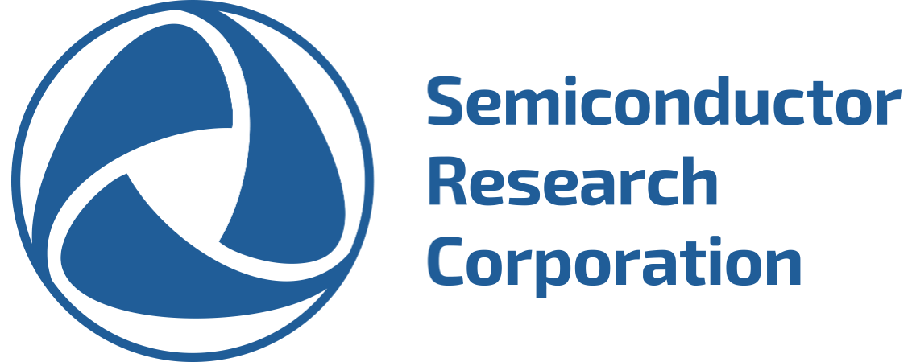
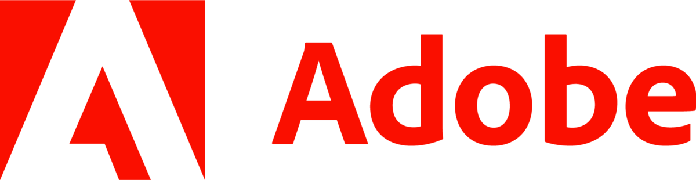
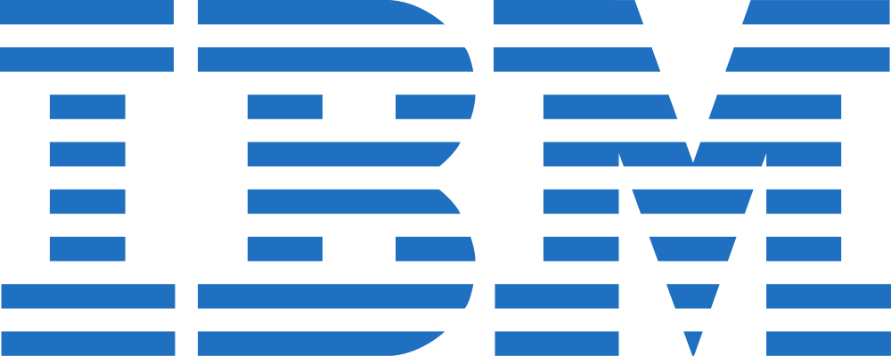

Danyang Zhuo
Assistant Professor
Duke Systems Group
Department of Computer Science
Duke University
danyang@cs.duke.edu
Biography
I am an assistant professor in the Department of Computer Science at Duke University. Before Duke, I was a postdoctoral researcher at UC Berkeley, working with Professor Ion Stoica. I completed my Ph.D. in the Paul G. Allen School of Computer Science and Engineering at University of Washington, advised by Professor Tom Anderson and Professor Arvind Krishnamurthy. My research has received NSF CAREER Award (2023), IEEE/ACM MICRO Best Paper Award (2025), USENIX Security Distinguished Paper Award (2023), USENIX FAST Best Paper Award (2021), Google Academic Research Award (2024), Meta Research Award (2022, 2021), Amazon Research Award (2021), and IBM Academic Award (2021).
[Curriculum Vitae]
Research
My research mainly spans two threads: (1) datacenter networking: RDMA, collective communication, application networks; (2) GPU systems: training, inference, multiplexing.
- Networking
- Remote Direct Memory Access (RDMA): Harmonic (NSDI24), Husky (NSDI23), Collie (NSDI22).
- Collective Communication: MCCS (SIGCOMM24), NetHint (NSDI22), Hoplite (SIGCOMM21).
- Remote Procedure Call (RPC) and Application Networking: ADN (NSDI25), mRPC (NSDI23).
- Software-Hardware Co-Design: HAL (ISCA24), Gallium (SIGCOMM20).
- GPUs
- Training: Phantora (NSDI26), AXLearn (MLSys26), Alpa (OSDI22), TeraPipe (ICML21).
- Inference: KVCOMM (NeurIPS25), Plato (COLM25), VTC (OSDI24), Punica (MLSys24), JellyBean (VLDB23).
- Kernels & Compilers: FlashSVD (AAAI26), Ansor (OSDI20).
- Multiplexing: Nixie (OSDI26).
- Compression: LLM.265 (MICRO25).
- Side interest: applying programming language and formal methods for system software.
- Rust for Operating Systems: Enoki (EuroSys24), Bento (FAST21).
- SMT-based Software Verification: Lightning (VLDB22), Gravel (NSDI20).
Students
I am very fortunate to work with a fantastic group of PhD students. I am recruiting PhD students for Fall 2027. Please apply to Duke CS if you are interested in working with me!
- Zhuo Chen
- Alexander Du (with Matthew Lentz)
- Yicheng Jin
- Jianxing Qin
- Yechen Xu
- Yuncheng Yao (with Tingjun Chen)
Past PhD Students:
- Jingrong Chen (2025). Uber.
- Yongji Wu (2024, with Matthew Lentz). Postdoc at UC Berkeley.
- Xinhao Kong (2024). Anthropic.
- Samantha Miller (2023, with Tom Anderson). Databricks.
Teaching
- Fall 2026: Distributed Systems (CompSci 512)
- Spring 2026: Systems for Machine Learning (CompSci 590.06)
- Fall 2025: Introduction to Operating Systems (CompSci 310)
- Spring 2025: Systems for Machine Learning (CompSci 590.05)
- Spring 2024: Introduction to Computer Systems (CompSci 210)
- Spring 2023: Distributed Systems (CompSci 512)
- Fall 2022: Introduction to Operating Systems (CompSci 310)
- Spring 2022: Data Center Systems (CompSci 590.04)
- Fall 2021: Introduction to Operating Systems (CompSci 310)
- Fall 2020: Advanced Operating Systems (CompSci 510)
Service
Organizer:
- 2026: Co-Chair of SIGCOMM Workshop on Networks for AI Computing (NAIC)
- 2022: Co-Chair for SIGCOMM Artifact Evaluation Committee
Technical Program Committee:
- 2027: NSDI
- 2026: ASPLOS, MLSys, NSDI, SIGMOD
- 2025: APNET, NSDI, SIGCOMM, SIGMOD
- 2024: APNET, CoNEXT, NSDI, SIGMOD
- 2023: APNET, NSDI, SIGCOMM
- 2022: APNET, FAST, NSDI, SIGCOMM
- 2021: CoNEXT
- 2020: SIGCOMM
Acknowledgement
I thank the following organizations and companies for their generous support:



